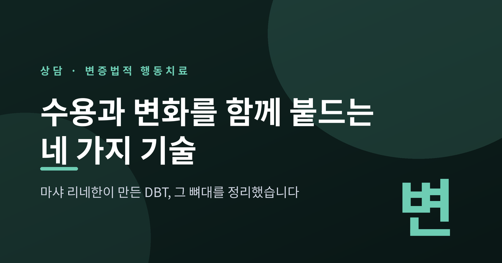
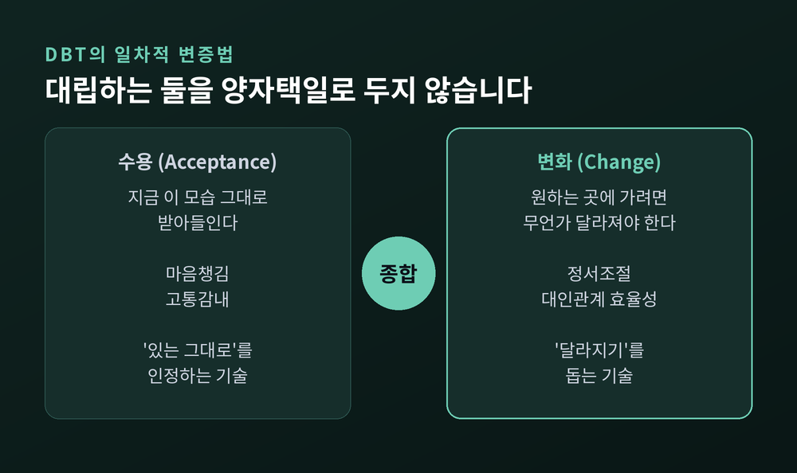
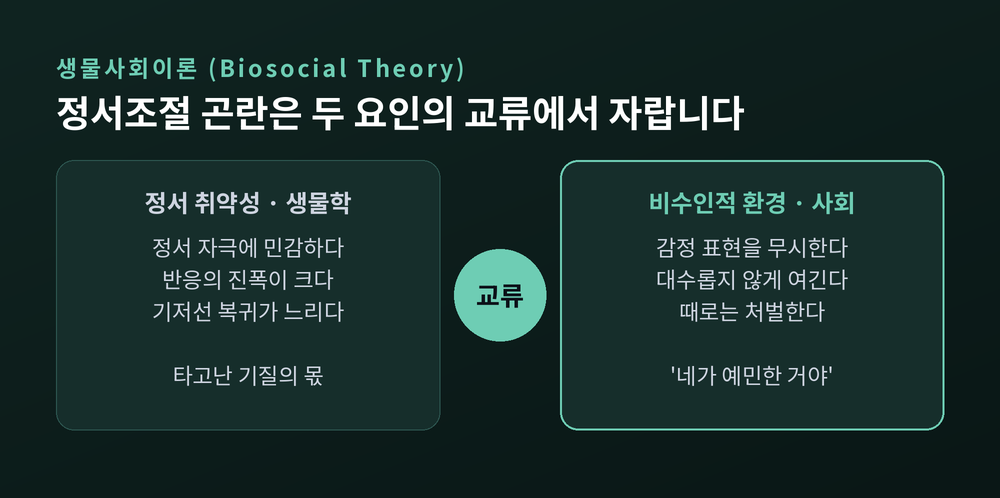
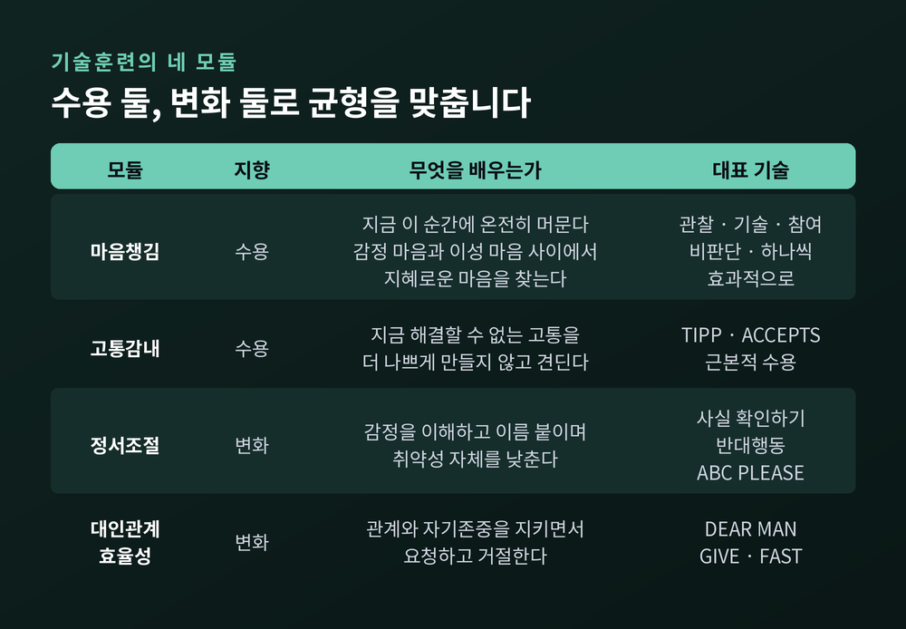
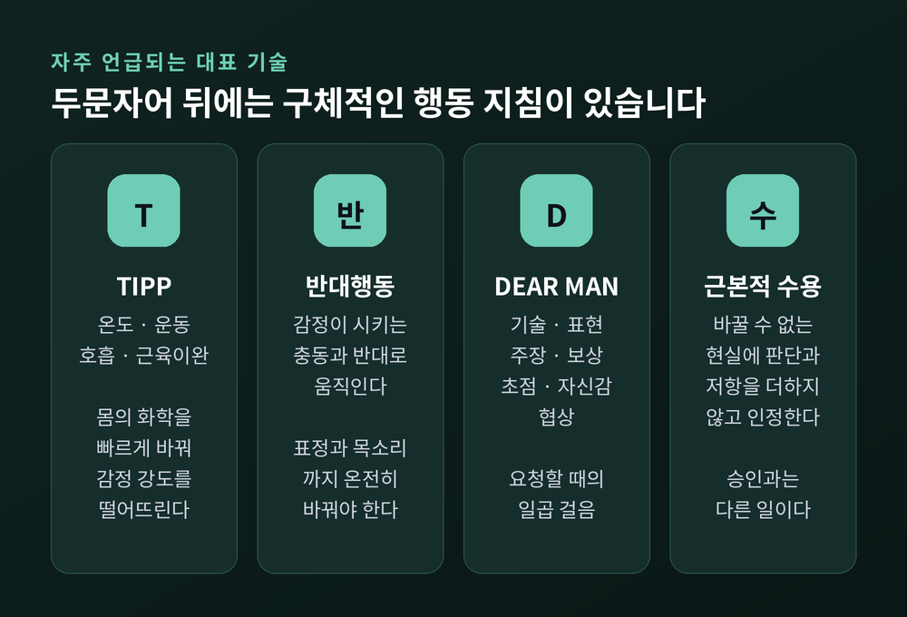
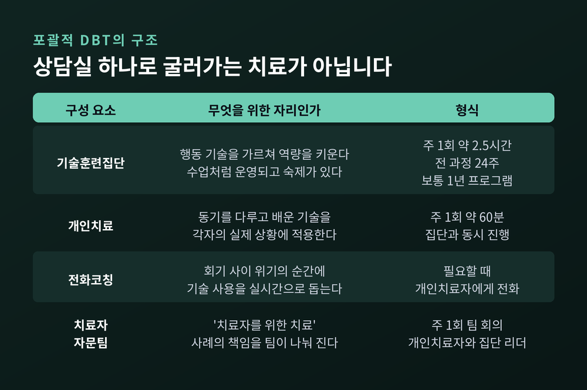
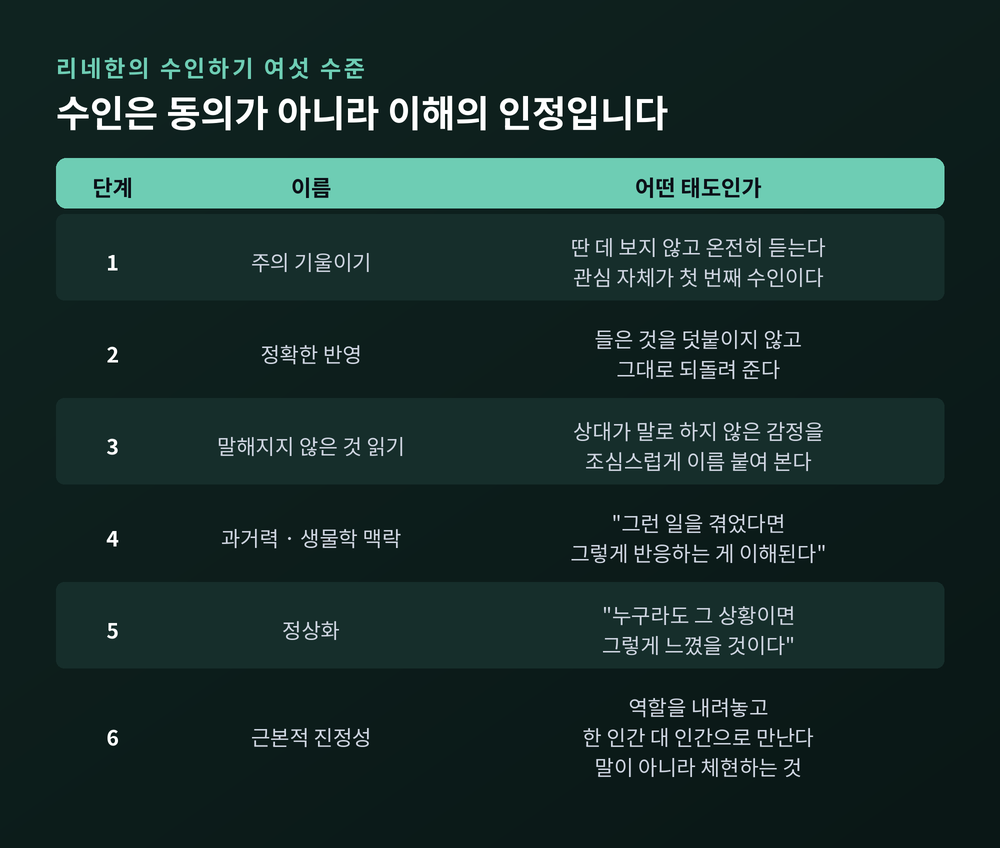

세 줄 요약
이번 글에서는 변증법적 행동치료(DBT)가 어떤 배경에서 나왔고, 무엇을 가르치며, 근거는 어디까지 확인됐는지 정리해 보겠습니다. 용어는 낯설지만 뼈대는 단순합니다. 수용과 변화, 이 두 단어만 붙잡고 읽으셔도 충분합니다.
변증법적 행동치료는 워싱턴대학교 심리학과 교수 마샤 리네한이 만들었습니다.
시작은 실패였습니다. 리네한은 표준 행동치료를 자살 위험이 매우 높은 사람들에게 적용해 보려 했습니다. 잘 되지 않았습니다. 본인의 회고에 따르면 이 치료의 발전은 이론에서 연역된 것이 아니라 "임상 현장의 시행착오"에서 나온 산물이었습니다.
문제는 이랬습니다. 변화를 밀어붙이면 내담자들은 "당신은 내 고통을 모른다"고 느끼며 치료를 떠났습니다. 반대로 수용만 하고 있으면 삶은 그대로였습니다. 리네한은 이 교착을 인지행동치료에 변증법 철학과 선(禪) 수행의 마음챙김을 붙여 풀었습니다.
1991년, 만성적으로 자기손상을 반복하던 경계성 인격장애 여성을 대상으로 한 무작위대조시험 결과가 발표됩니다. 자기손상 횟수가 줄었고, 손상의 의학적 심각도가 낮았으며, 치료를 계속 받는 비율이 높았고, 정신과 입원일수가 적었습니다. 이 분야에서 통제된 시험으로 효과가 확인된 최초의 심리치료로 평가받습니다.
1993년에는 치료 매뉴얼이 나오며 지금의 4요소 구조가 자리를 잡습니다.
그리고 2011년, 리네한은 한 강연에서 자신이 청소년기에 심각한 정신적 위기를 겪었다는 사실을 처음 밝혔습니다. 그 시절 그는 이런 취지의 서원을 세웠다고 합니다. 여기서 빠져나갈 수 있다면, 다른 사람도 빠져나오게 돕겠다고.
DBT가 치료 목표를 "살 만한 가치가 있는 삶"이라는 말로 표현하는 이유가 여기 있습니다.
워싱턴대 연구클리닉의 공식 설명은 간결합니다. 변증법이란 대립하는 것들의 종합 또는 통합을 뜻하며, 이 치료 안의 일차적 변증법은 수용과 변화 사이의 것이라고 밝힙니다.
치료자는 내담자를 지금 모습 그대로 받아들입니다. 그러면서 동시에, 그가 원하는 곳에 가려면 무언가는 달라져야 한다는 사실도 인정합니다.
둘 중 하나를 고르지 않습니다. 둘 다 붙듭니다.

이 태도는 흑백 사고를 다루는 방식이기도 합니다. "전부 아니면 전무"를 "둘 다 참일 수 있다"로 옮기는 연습이죠. 실제로 기술 체계 자체가 이 균형을 그대로 따릅니다. 네 모듈 중 둘은 수용 지향이고, 나머지 둘은 변화 지향입니다.
이 치료는 정서조절의 어려움이 어디서 오는지에 대해 분명한 설명을 가지고 있습니다. 생물사회이론입니다.
핵심 가정은 두 요인의 '교류'입니다. 타고난 정서 취약성과 비수인적 환경이 서로 주고받으며 굳어진다는 것입니다.
정서 취약성은 세 가지로 나뉩니다. 정서 자극에 대한 높은 민감성, 큰 반응 진폭, 그리고 기저선으로 돌아오는 속도의 느림입니다. 남들이 지나치는 자극에 반응하고, 반응이 크고, 오래 갑니다.
비수인적 환경은 한 사람이 자기 욕구와 감정을 표현할 때 이를 지속적으로 무시하거나 대수롭지 않게 여기거나 처벌하는 환경을 말합니다. "그 정도로 뭘 그래", "네가 예민한 거야" 같은 말이 반복되는 자리입니다.

중요한 것은 '교류'라는 단어입니다. 한쪽이 다른 쪽의 원인이라는 단선적 설명이 아닙니다. 예민한 아이의 큰 반응이 주변의 비수인을 부르고, 비수인이 다시 예민함을 키우는 양방향 순환입니다. 누구의 잘못인지를 가리는 틀이 아니라는 뜻입니다.
이 이론 때문에 DBT는 수인하기를 일차 개입으로 삼습니다. 먼저 수인이 되어야 변화가 시작된다고 보기 때문입니다.
기술훈련에서 가르치는 내용은 네 모듈로 나뉩니다.

마음챙김은 나머지 전부의 토대이고 보통 가장 먼저 배웁니다. 감정이 장악한 '감정 마음'과 논리만 남은 '이성 마음' 사이에서, 직관까지 포함한 '지혜로운 마음'을 찾는 연습입니다. 무엇을 하는가는 관찰·기술·참여로, 어떻게 하는가는 비판단적으로·하나씩·효과적으로 정리됩니다.
고통감내는 지금 당장 해결할 수 없는 고통을 견디는 기술입니다. 위기를 넘기는 기술과 현실을 받아들이는 기술로 갈립니다. 후자의 대표가 근본적 수용인데, 이것은 현실을 승인하는 일이 아닙니다. 판단과 저항을 더하지 않고 있는 그대로 인정하는 일입니다.
정서조절은 감정을 이해하고 이름 붙이고, 원치 않는 감정의 빈도를 줄이고, 취약성 자체를 낮추는 기술입니다.
대인관계 효율성은 관계와 자기존중을 지키면서 원하는 것을 요청하고 거절하는 기술입니다.
두문자어가 많아 처음에는 어지럽습니다. 그러나 각각은 아주 구체적인 행동 지침입니다.

TIPP — 고통감내의 응급 기술입니다. 온도(Temperature), 강렬한 운동(Intense exercise), 속도를 늦춘 호흡(Paced breathing), 근육 이완(Paired muscle relaxation). 몸의 화학 상태를 빠르게 바꿔 감정 강도를 떨어뜨립니다. 이 기술이 먼저인 이유는 분명합니다. 감정이 10점 만점에 10인 상태에서는 다른 어떤 기술도 작동하지 않기 때문입니다. 강도를 먼저 내리고, 그다음에 생각합니다.
반대행동 — 감정이 시키는 행동 충동과 정반대로 움직여 감정을 바꿉니다. 두려움은 피하라 하지만, 실제로 안전하다면 다가갑니다. 수치심은 숨으라 하지만, 숨기지 않습니다. 우울은 눕히려 하지만, 몸을 일으킵니다. 단서가 둘 있습니다. 감정이 사실에 맞지 않거나 도움이 되지 않을 때만 쓴다는 것, 그리고 표정과 목소리까지 온전히 바꿔야 효과가 난다는 것입니다.
DEAR MAN — 원하는 것을 요청할 때 쓰는 순서입니다. 판단 없이 상황을 기술하고(Describe), 내 감정을 표현하고(Express), 원하는 바를 분명히 말하고(Assert), 들어줬을 때의 좋은 결과를 알려주고(Reinforce), 주제에서 벗어나지 않고(Mindful), 자신 있는 태도를 유지하며(Appear confident), 협상의 여지를 남깁니다(Negotiate). 관계를 지키는 GIVE, 자기존중을 지키는 FAST가 짝을 이룹니다.
ABC PLEASE — 정서적 취약성을 미리 낮추는 생활 기술입니다. 긍정 경험을 쌓고, 유능감을 주는 일에 도전하고, 어려운 상황을 미리 리허설합니다. 여기에 신체 질환 관리, 균형 잡힌 식사, 기분을 바꾸는 물질 피하기, 수면, 운동이 붙습니다. 몸이 무너지면 감정도 조절되지 않는다는 전제를 기술로 만든 것입니다.
가장 오해가 잦은 대목입니다. 포괄적 DBT는 네 가지 요소가 동시에 돌아가는 구조입니다.

기술훈련집단은 수업처럼 운영됩니다. 주 1회 약 2.5시간, 전체 교육과정을 한 바퀴 도는 데 24주가 걸리고, 보통 한 번 더 반복해 1년 프로그램으로 만듭니다.
개인치료는 주 1회 약 60분이며 집단과 동시에 진행됩니다. 여기서는 동기를 다루고, 배운 기술을 각자의 실제 상황에 붙입니다.
전화코칭은 회기 사이에 위기가 왔을 때 그 순간 전화로 기술 사용을 코칭받는 장치입니다.
그리고 치료자 자문팀. 이것은 "치료자를 위한 치료"로 불립니다. 주 1회 모여 각 사례의 책임을 나눠 집니다. 치료자가 소진되면 치료도 무너진다는 전제가 구조 안에 들어와 있는 셈입니다.
문제를 다루는 순서도 정해져 있습니다. 생명을 위협하는 행동이 가장 먼저이고, 그다음이 치료를 방해하는 행동, 삶의 질을 저해하는 행동, 기술 습득 순입니다. 두 번째 항목에는 내담자의 행동만이 아니라 치료자의 행동도 포함됩니다.
수인은 이 치료에서 기법 이상의 위치를 차지합니다. 리네한은 이를 여섯 수준으로 정리했습니다.

주목할 것은 마지막 단계입니다. 근본적 진정성은 치료자나 조력자의 역할을 내려놓고 한 인간 대 인간으로 만나는 것을 뜻합니다. 리네한은 이를 "부서지기 쉬운 존재나 조심스럽게 관리할 대상이 아니라, 있는 그대로의 사람으로 대하는 것"이라고 썼습니다. 다섯 번째 단계가 말로 하는 것이라면, 여섯 번째는 몸으로 체현하는 것입니다.
한 가지만 분명히 해두겠습니다. 수인은 동의가 아닙니다. 상대의 반응이 그 사람의 맥락에서 이해된다는 사실을 인정하는 것이지, 그 행동이 옳다고 승인하는 것이 아닙니다.
2006년, 리네한 연구팀은 더 엄격한 비교를 시도했습니다. 대조군을 통상치료가 아니라 지역사회의 비행동주의 전문가 치료로 두었습니다. 최근 자살·자기손상 행동이 있던 여성 101명이 참여했습니다.
결과는 이랬습니다. 자살 시도 가능성이 절반 수준이었고, 자살 사고로 인한 입원 필요가 줄었으며, 치료 중도탈락이 적었고, 정신과 입원과 응급실 방문도 더 적었습니다. 논문은 이 치료가 자살 시도를 줄이는 데 "고유하게 효과적"으로 보인다고 결론지었습니다.
청소년에서도 확인됩니다. 2018년 4개 학술의료기관에서 12~18세 173명을 무작위 배정한 시험에서, 6개월 시점의 자기손상 발생 가능성이 비교 치료의 약 3분의 1 수준이었습니다. 2021년 메타분석은 청소년 자기손상에 대해 효과크기 g = −0.44, 자살 사고에 대해 g = −0.31을 보고했습니다.
영국 NICE 가이드라인은 반복적 자기손상을 줄이는 것이 우선순위인 경계성 인격장애 여성에게 포괄적 변증법적 행동치료 프로그램을 고려하라고 권고합니다.
적용 범위도 넓어졌습니다. 물질 의존, 우울, 외상후스트레스장애, 섭식장애 등으로 확장되며 범진단적·모듈형 치료로 분류됩니다.
좋은 소식만 적으면 정확하지 않습니다.
2020년 코크란 리뷰는 경계성 인격장애 심리치료 전반을 검토했습니다. 무작위대조시험 75건, 참가자 4,507명 규모입니다. 심리치료 전체는 통상치료 대비 증상 심각도를 낮췄고(SMD −0.52, 중간 수준 근거), DBT 단독으로도 자기손상과 심리사회적 기능에서 유의한 효과가 나왔습니다.
그런데 여기에 단서가 붙습니다. DBT 단독 결과의 근거 확실성은 '낮음'으로 평가됐고, 치료 유형 간 효과 차이의 근거는 발견되지 않았습니다. 다시 말해 "이 치료만이 답"이라고 말하기에는 아직 이릅니다.
중도탈락도 짚어야 합니다. 경계성 인격장애 심리치료 전반의 탈락률은 메타분석에서 약 25%로 보고되지만, 일부 기술훈련 연구에서는 44~66%까지 보고된 경우도 있습니다. 편차가 큽니다.
비용과 강도 역시 현실적인 장벽입니다. 주 1회 개인치료와 2.5시간 집단, 전화코칭, 자문팀을 1년 가까이 병행하는 구조는 시간도 비용도 만만치 않습니다. 그래서 현실에서는 기술훈련 집단만 제공되는 경우가 흔합니다. 이것은 표준 프로그램과 다른 것이고, 근거 수준도 같지 않습니다.
NICE 권고의 범위가 좁다는 점도 기억할 만합니다. 모든 환자에 대한 일반 권고가 아닙니다.
생물사회이론의 '비수인적 환경'을 실제로 어떻게 측정할 것인지에 대한 문제 제기도 남아 있습니다. 설명력이 좋다고 해서 검증이 끝난 것은 아닙니다.
이 글은 정보를 정리한 것이며 진단이나 치료를 대신할 수 없습니다. 감정 기복이 삶을 흔들거나 자기손상 충동이 반복된다면, 혼자 기술을 익히는 것으로 해결하려 하기보다 정신건강의학과나 전문 상담기관에서 평가를 받아보시길 권합니다. 표준 DBT는 구조 자체가 훈련된 팀을 전제로 설계된 치료입니다.
지금 위기 상황에 계시거나 주변에 걱정되는 분이 있다면, 자살예방상담전화 109로 연락하실 수 있습니다. 2024년부터 여러 기관의 상담전화가 이 번호로 통합되어 24시간 운영되며, 상담 내용은 비밀이 보장됩니다. 본인뿐 아니라 가족·친구·동료를 어떻게 도울지도 안내받을 수 있습니다.
정리하면 이렇습니다.
변증법적 행동치료가 준 가장 큰 전환은 새로운 기법 목록이 아니었습니다. 받아들이는 일과 바꾸는 일을 양자택일로 두지 않아도 된다는 발상이었습니다. 예전에는 둘 중 하나를 골라야 한다고 여겼습니다. 지금은 둘을 함께 쥐는 법을 가르칩니다.
"지금의 나를 인정하는 것과, 달라지려 애쓰는 것은 서로를 방해하지 않는다."
기술의 이름은 시간이 지나면 잊힙니다. 그래도 이 한 문장은 남을 만합니다. 두 가지를 동시에 붙들 수 있겠냐고 물으신다면, 연습하면 가능하다고 답하겠습니다.